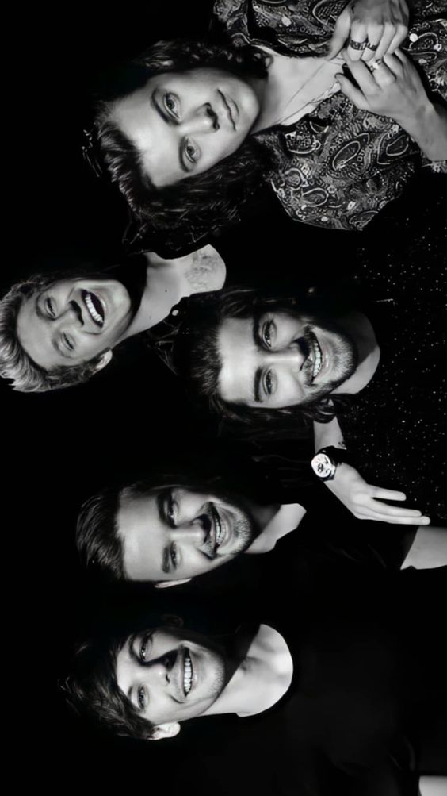

One Direction adalah fenomena dalam industri musik pop global pada awal 2010-an. Boy band yang biasa disebut 1D ini, terbentuk melalui acara pencarian bakat “The X Factor” di Inggris pada tahun 2010. Kelima anggotanya, yaitu Harry Styles, Liam Payne, Louis Tomlinson, Niall Horan, dan Zayn Malik mendapat perhatian besar karena bakat menyanyi dan pesona mereka. Sejak debut, boy band ini menempati posisi puncak tangga lagu dengan lagu-lagu yang memukau, seperti What Makes You Beautiful, Story of My Life, Best Song Ever, dan lainnya yang menarik jutaan penggemar dengan harmoni vokal yang khas dan penampilan panggung yang energik.
Keberhasilan mereka tidak hanya terbatas pada tangga lagu, tetapi juga dalam menciptakan komunitas penggemar yang kuat. “Directioners” sebutan untuk penggemar setia One Direction, memberikan dukungan tak tergoyahkan pada setiap langkah kelima anggota. Kehadiran mereka di media sosial, kolaborasi dengan amal, dan interaksi langsung dengan penggemar menciptakan ikatan yang kuat antara grup dan komunitas penggemarnya.
Pada tahun 2010, One Dorection merilis album debut mereka, “Up All Night”, yang langsung memuncaki tangga album di berbagai negara. Album ini memperkenalkan lagu What Makes You Beautiful dan One Thing yang menjadi hits di dunia musik. Kesuksesan mereka berlanjut dengan album-album berikutnya seperti “Take Me Home” dan “Midnight Memories”. Kedua album ini mendominasi tangga album di seluruh dunia dan menghasilkan sejumlah lagu hits lain seperti Live While We're Young, Story of My Life, dan Best Song Ever.
One Direction juga merilis dokumenter konser, “This Is Us”, pada tahun 2013 yang memberikan pandangan mendalam terhadap kehidupan dan kesuksesan mereka sebagai boy band. Ditahun selanjutnya, album keempat mereka, “Four”, dirilis dan terus mempertahankan dominasi mereka di tangga album. Single dari album ini, seperti Steal My Girl dan Night Changes berhasil menarik perhatian penggemar setia serta mendapat sambutan hangat dari kritikus musik.
Setelah meraih kesuksesan besar dalam beberapa tahun pertama, pada tahun 2015, Zayn Malik memutuskan untuk meninggalkan One Direction. Meskipun hal ini mengejutkan banyak penggemar, kelima anggota lainnya tetap melanjutkan perjalanan dengan merilis album terakhir sebagai grup, “Made in the A.M.” sebelum akhirnya mereka memutuskan untuk istirahat dari aktivitas bersama pada tahun 2016. Meskipun kini mereka sudah fokus pada karier masing-masing, para Directioners tetap setia mendukung perkembangan karier individu anggota One Direction, sambil terus berharap akan ada kesempatan untuk melihat mereka kembali bersatu di masa depan.